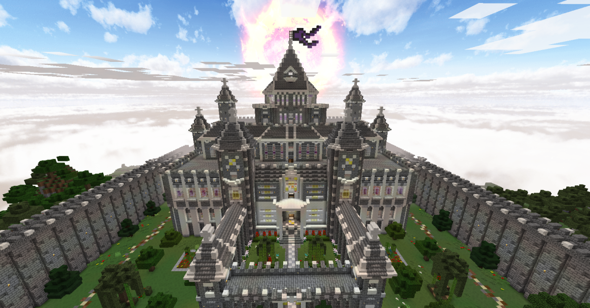
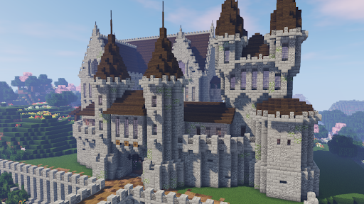
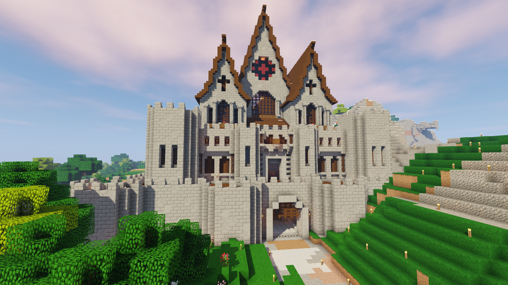

Minecraft Page



Minecraft is a sandbox video game developed by Mojang. Minecraft was created by Markus "Notch" Persson in the Java programming language and was released as a public alpha for personal computers in 2009 before officially releasing in November 2011, with Jens Bergensten taking over development around then. It has since been ported to various platforms and is the bestselling video game of all time, with over 180 million copies sold across all platforms and over 112 million monthly active players by 2019.
In Minecraft, players explore a blocky, procedurally-generated 3D world, and may discover and extract raw materials, craft tools, build structures or earthworks, and depending on game mode, can fight computer-controlled "mobs", as well as either cooperate with or compete against other players in the same world. These modes include a survival mode, in which players must acquire resources to build the world and maintain health, and a creative mode, where players have unlimited resources. Players can modify the game to create new gameplay mechanics, items, and assets.
Minecraft has been critically acclaimed, winning several awards and being cited of the most influential and greatest video games of all time. Social media, parodies, adaptations, merchandise, and the annual MineCon conventions played large roles in popularizing the game. It has also been used in educational environments, especially in the realm of computing systems, as virtual computers and hardware devices have been built in it. In 2014, Mojang and the Minecraft intellectual property were purchased by Microsoft for US$2.5 billion. A number of spin-off games have also been produced, such as Minecraft: Story Mode, Minecraft Dungeons, and Minecraft Earth.